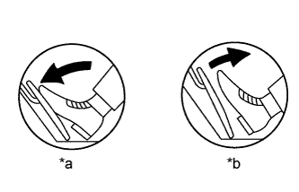

DTC P2121 Throttle / Pedal Position Sensor / Switch "D" Circuit Range / Performance |
| DTC No. | DTC Detection Condition | Trouble Area |
| P2121 | Difference between VPA and VPA2 is less than 0.4 V, or more than 1.2 V for 0.5 seconds (1 trip detection logic). |
|
| Required Sensors/Components (Main) | Accelerator pedal position sensor assembly |
| Frequency of Operation | Continuous |
| Tester Display | Description |
| NORMAL |
|
| ABNORMAL |
|
| INCOMPLETE |
|
| UNKNOWN |
|
| 1.CHECK FOR ANY OTHER DTCS OUTPUT (IN ADDITION TO DTC P2121) |
Connect the intelligent tester to the DLC3.
Turn the engine switch on (IG).
Turn the tester on.
Enter the following menus: Powertrain / Engine and ECT / DTC.
Read DTCs.
| Result | Proceed to |
| P2121 is output | A |
| P2121 and other DTCs are output | B |
|
| ||||
| A | |
| 2.READ VALUE USING INTELLIGENT TESTER (ACCELERATOR PEDAL POSITION SENSOR) |
|  |
Connect the intelligent tester to the DLC3.
Turn the engine switch on (IG).
Turn the tester on.
Enter the following menus: Powertrain / Engine and ECT / Data List / All Data / Accel Sensor Out No. 1 and Accel Sensor Out No. 2.
Read the values displayed on the tester.
| Accelerator Pedal Operation | Accel Sensor Out No. 1 | Accel Sensor Out No. 2 | Difference between Accel Sensor Out No. 1 and Accel Sensor Out No. 2 |
| Released | 0.5 to 1.1 V | 1.2 to 2.0 V | 0.4 to 1.2 V |
| Depressed | 2.6 to 4.5 V | 3.4 to 4.7 V |
| *a | Depressed |
| *b | Released |
|
| ||||
| OK | ||
| ||
| 3.REPLACE ACCELERATOR PEDAL POSITION SENSOR ASSEMBLY |
Replace the accelerator pedal position sensor assembly (Click here).
| NEXT | |
| 4.CHECK WHETHER DTC OUTPUT RECURS (DTC P2121) |
Connect the intelligent tester to the DLC3.
Turn the engine switch on (IG).
Turn the tester on.
Clear DTCs (Click here).
Drive the vehicle in accordance with the driving pattern described in Confirmation Driving Pattern.
Read DTCs.
| Result | Proceed to |
| P2121 is output | A |
| No DTC is output | B |
|
| ||||
| A | ||
| ||